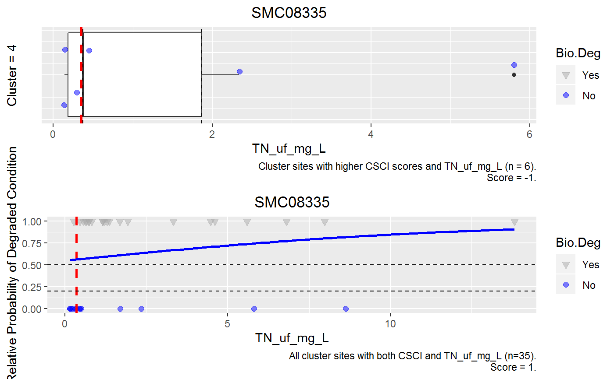
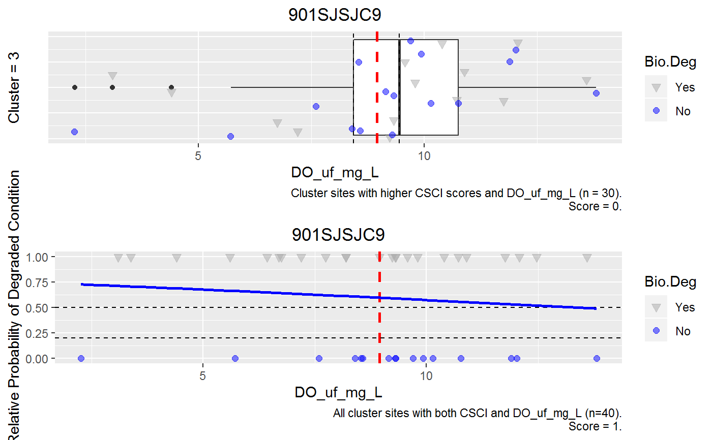
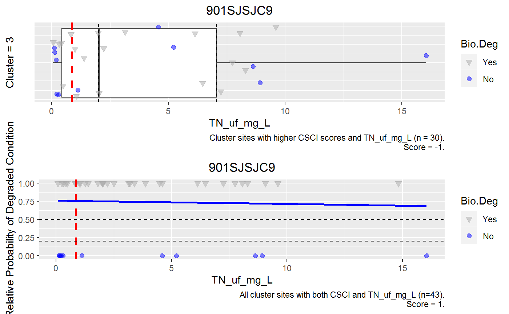
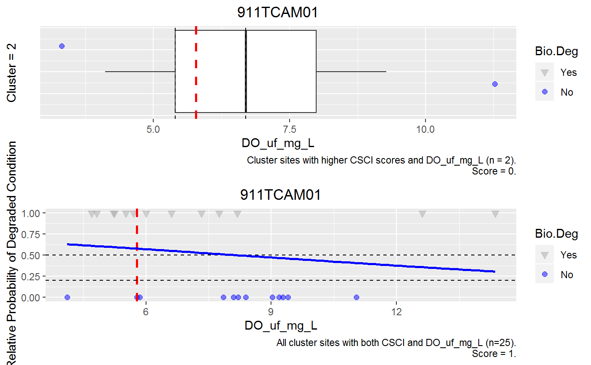
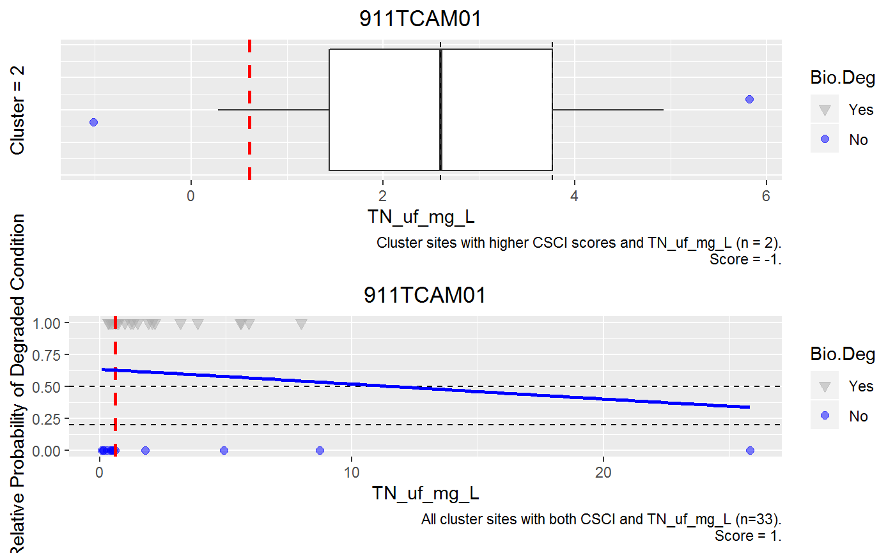
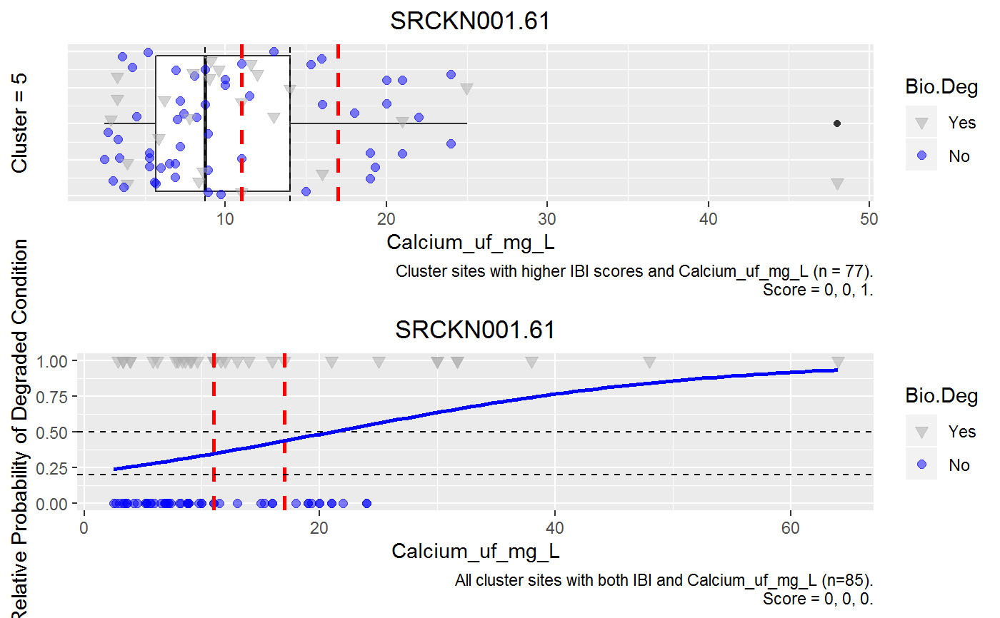
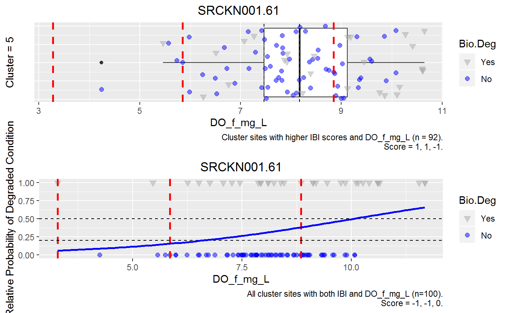
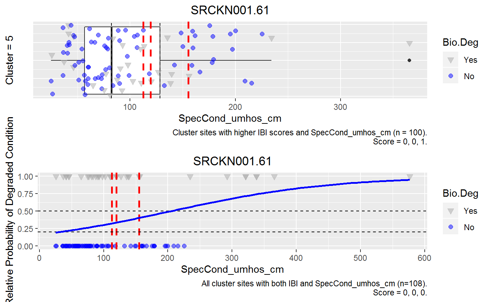

Generates a box plots and stressor response plots (individually as jpg and together as a PDF) as well as scores for co-occurence.
getCoOccur(df.data, TargetSiteID = NULL, col.ID, col.Group, col.Bio, col.Stressors, Bio.Nar.Brk = c(-2, 0.62, 0.799, 0.919, 2), Bio.Nar.Lab = c("very likely altered", "likely altered", "possibly altered ", "likely intact"), Bio.Deg.Brk = c(-2, 0.799, 2), Bio.Deg.Lab = c("Yes", "No"), biocomm = "bmi", dir.plots = file.path(getwd(), "Results"), dir_sub = "CoOccurrence", col.Stressors.InvSc = c("DO_f_.", "DO_f_mg_L", "DO_f_unk", "DOSat_f_.", "DOSat_f_unk", "DO_uf_mg_L", "pH", "pH_SU"))
| df.data | data frame with data. |
|---|---|
| TargetSiteID | ID of station/sample to plot; can be single or multiple. Default is first entry in df.data[, col.ID] |
| col.ID | df.data column with unique Station/Sample identifier. |
| col.Group | df.data column with grouping variable. |
| col.Bio | df.data column with biological numeric value. |
| col.Stressors | df.data column(s) with stressor variable(s); can be single or multiple. |
| Bio.Nar.Brk | Biological assessment narrative, cut function breaks. Should be in order from bad (low) to good (high). Default = c(-2, 0.62, 0.799, 0.919, 2) |
| Bio.Nar.Lab | Biological assessment narrative, cut function labels. Should be in order from bad (low) to good (high). Default = c("very likely altered", "likely altered", "possibly altered ", "likely intact") |
| Bio.Deg.Brk | Biological assessment degraded status, cut function breaks. Should be in order from bad (low) to good (high). Default = c(-2, 0.799, 2) |
| Bio.Deg.Lab | Biological assessment degraded status, cut function labels. Should be in order from bad (low) to good (high). Defaults are referenced in the code so if change the code will break. Default = c("Yes", "No"). |
| biocomm | Biological community; algae or BMI. Default = "BMI". |
| dir.plots | Directory to save plots. Default = working directory and Results. |
| dir_sub | Subdirectory for outputs from this function. Default = "CoOccurrence" |
| col.Stressor.InvSc | Stressors as columns of df.data that have inverse scoring for box plots. Default = pH and DO; c("DO_f_.", "DO_f_mg_L", "DO_f_unk", "DOSat_f_." , "DOSat_f_unk", "DO_uf_mg_L", "pH", "pH_SU") |
Saves a single PDF of all plots, individual plots as JPGs, and a scores files (tab separated text file) to a user defined 'Results' directory in a 'CoOccurrence subdirectory. A sub-directory is created under 'Results' for each SiteID in TargetSiteID.
Derive evidence fo spatial/temporal co-occurrence.
Are higher levels of the stressor observed where and when the biological effect occurs?
Box plots are used to show the distribution of the stressor levels at compartor sites with better biological condition. If a site has multiple biological condition scores the lowest score is used to determine "better" sites.
Samples are scored:
1. Supports the case for candidate cause. Stressor levels at the test sites are above the 75th percentile of comparator sites having higher biological quality.
0. Indeterminate. Stressor levels at the test site are below the 50th percentile of comparator sites having higher biological quality.
-1. Weakens the case for the candidate cause. Stressor levels at the test sites are between the 50th and 75th percentile of comparator sites having higher biological quality.
Derive Evidence for Stressor-Response Relationships from Field Observational Studies.
Stressor-response from field observational studies: Is the level of the stressor sufficient to explain the level of biological effect observed at the site?
Using all comparator sites, fit logistical regression curve of the probability of poor condition (i.e., poor California index score) as a function of stressor level. Compare stressor levels from test site to levels corresponding to median (50 condition.
1. Supports the case for the candidate cause. Stressor levels at the test site are above the lower confidence limit (LCL) corresponding to 50 probability of observing poor condition
0. Indeterminate. Stressor levels at the test site are between the LCL corresponding to 50 corresponding to 20
-1. Weakens the case for the candidate cause. Stressor levels at the test site are below the upper confidence limit (UCL) corresponding to 20 probability of observing poor condition.
Cut function is used to assign narrative categories and degraded status based on provided biological score. Ensures criteria are applied the same across all sites.
The Bio.Deg.Lab has to remain as the default values of Yes and No. Other values will break the code.
Only a single biological measurement is used. But multiple stressors can be used.
Uses the libraries dplyr, wrapr, ggplot2, and gridExtra.
# Example #1, CA data (multiple sites) # #Load Data df.data <- data_CoOccur_CA # col.Group <- "Group" col.Bio <- "CSCI" col.Stressors <- c("DO_uf_mg_L", "TN_uf_mg_L", "TP_mg_L") col.ID <- "StationID_Master" # Bio.Nar.Brk <- c(-2, 0.62, 0.799, 0.919, 2) Bio.Nar.Lab <- c("very likely altered", "likely altered" , "possibly altered ", "likely intact") Bio.Deg.Brk <- c(-2, 0.799, 2) Bio.Deg.Lab <- c("Yes", "No") biocomm <- "bmi" dir.plots <- file.path(getwd(), "Results") dir_sub <- "CoOccurrence" # TargetSiteID <- c("SMC08335", "901SJSJC9", "911TCAM01", "403STC004") # # Specify stressors by name col.Stressors.InvSc <- c("DO_uf_mg_L", "pH") # getCoOccur(df.data, TargetSiteID, col.ID, col.Group, col.Bio, col.Stressors , Bio.Nar.Brk, Bio.Nar.Lab, Bio.Deg.Brk, Bio.Deg.Lab , biocomm, dir.plots, dir_sub, col.Stressors.InvSc )#>#>#>#>#>#>
#>
#>#>#>
#>
#>#>#>#>#>#>#>#>
#~~~~~~~~~~~~~~~~~~~~~~~~~~~~~~~~~~~~~~~~~~~~ # Example #2, AZ data (single site) # TargetSiteID <- c("SRCKN001.61") # # Cluster Data based on elevation category boo_Lo <- TargetSiteID %in% data_CoOccur_AZ_Lo$StationID_Master if(boo_Lo==TRUE){ df.data <- data_CoOccur_AZ_Lo } else { df.data <- data_CoOccur_AZ_Hi } # col.Group <- "Group" col.Bio <- "IBI" col.Stressors <- c("Calcium_uf_mg_L", "Copper_uf_ug_L", "DO_f_mg_L", "SpecCond_umhos_cm") col.ID <- "StationID_Master" # Bio.Nar.Brk <- c(0, 45, 52, 100) Bio.Nar.Lab <- c("Most Disturbed", "Intermediate", "Least Disturbed") Bio.Deg.Brk <- c(0, 45, 100) Bio.Deg.Lab <- c("Yes", "No") biocomm <- "bmi" dir.plots <- file.path(getwd(), "Results") dir_sub <- "CoOccurrence" # Specify stressors by name #col.Stressors.InvSc <- c("DO_f_.", "DO_f_mg_L", "DO_f_unk", "DOSat_f_.", "DOSat_f_unk", "pH_SU") # Get stressors from chem.info col.Stressors.InvSc <- data_ChemInfo[data_ChemInfo[, "DirIncStress"] == "Dec", "StdParamName"] # getCoOccur(df.data, TargetSiteID, col.ID, col.Group, col.Bio, col.Stressors , Bio.Nar.Brk, Bio.Nar.Lab, Bio.Deg.Brk, Bio.Deg.Lab , biocomm, dir.plots, dir_sub, col.Stressors.InvSc )#>#>#>#>
#>
